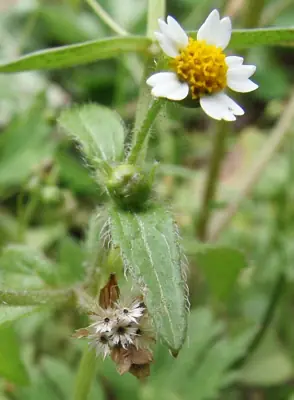

pranet · 出典付きの植物図鑑
ハキダメギク
Galinsoga quadriradiata Ruiz & Pav. · Asteraceae

ハキダメギク は、キク科コゴメギク属の一年生植物。道ばたや庭などに生える雑草。熱帯アメリカ原産で、日本では帰化植物のひとつ。牧野富太郎が世田谷の掃き溜めで発見したのでこの名前がついた。中国名は、粗毛牛膝菊。
出典: Wikipedia 日本語版「ハキダメギク」 · CC BY-SA 4.0
異名: Adventina ciliata Raf., Ageratum perplexans M.F.Johnson, Baziasa urticifolia (Kunth) Steud., Galinsoga allaeocarpa Spreng., Galinsoga aristulata E.P.Bicknell, Galinsoga bicolorata H.St.John & D.White, Galinsoga bicolorata St.John & D.White, Galinsoga brachystephana Otto, Galinsoga brachystephana Otto ex Heer & Regel, Galinsoga brachystephana Regel, Galinsoga caracasana Sch.Bip., Galinsoga ciliata (Raf.) S.F.Blake, Galinsoga eligulata Cuatrec., Galinsoga hispida (DC.) Hieron., Galinsoga hispida Benth., Galinsoga humboldtii Hieron., Galinsoga plikeri Giacom., Galinsoga urticifolia (Kunth) Benth., Jaegeria urticaefolia (Kunth) Spreng., Jaegeria urticifolia (Kunth) Spreng.
同定や利用は自己責任でお願いします。この図鑑だけを根拠に野生の植物を食べないでください。
出典
- 学名: World Flora Online Plant List 2026-06 · CC0 1.0
- 名前: Wikipedia の記事名と Wikidata · CC0 1.0（Wikidata）。記事名は事実
- 説明: Wikipedia 日本語版「ハキダメギク」 · CC BY-SA 4.0
- 食用・毒性: World Checklist of Useful Plant Species (Diazgranados et al. 2020, RBG Kew) · CC BY 4.0
- 分布: World Checklist of Vascular Plants (WCVP), RBG Kew, version 2026-06-04 · CC BY 3.0
このページは pranet のデータから自動生成しています。コードは MIT、データは項目ごとのライセンス（説明）。